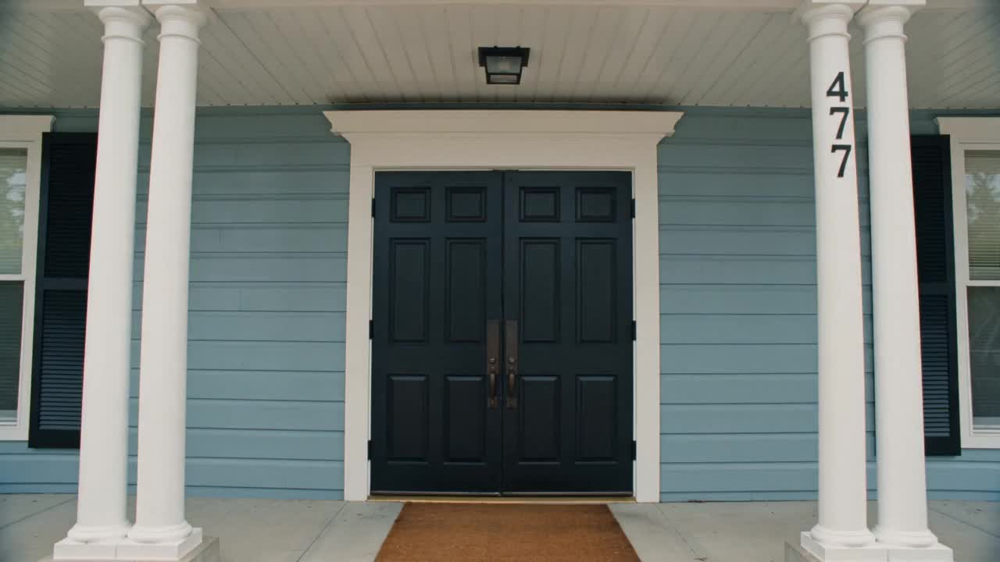

 Equity Uprise · The Movement
Equity Uprise · The Movement
Equity.
Then we rise.
- Freeto join, now and always
- 16questions in the terminal below
- 9fellows already on the public record
Equity Uprise walks straight down the middle of the aisle — not to pick a side, but to unite them. A movement, not a party: nonpartisan on purpose, because the problems that keep our neighborhoods down were never left or right, and neighbors pitted against each other lose together.
The Policy Fellowship is free. Answer the terminal. Tell the movement who you are, what you can do, and what you'd fix first. Your first act as a fellow is a vote.
How we organize
We organize with music and art as political activism: concerts, events, and culture that educate the masses. And we believe your talent, whatever field it lives in, is a superpower. Use your superpowers for good. Rise with the people. Let's take our nation back.
How this actually works. There is no application server behind this terminal and no automated screen. Your answers stay in this browser while you type, so you can close the tab and pick it back up. When you submit, the page opens your own mail app with the answers filled in, addressed to matthew@mccluster.org, and nothing leaves your device until you press send. A person reads every one and replies from that address. You can also download your own copy of the answers before you send anything. The nine fellows of the 2025 cohort are named on the Equity Uprise program page.
EQUITY UPRISE // FELLOWSHIP TERMINAL v1.0 · session open